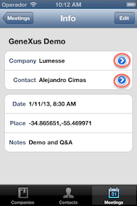
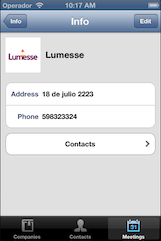
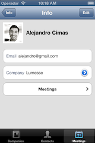
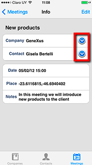
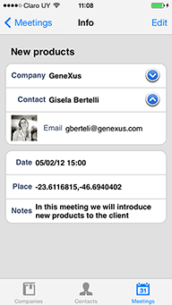
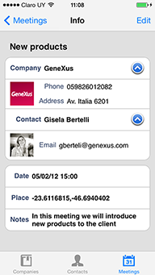
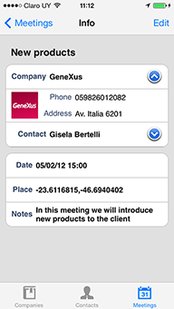
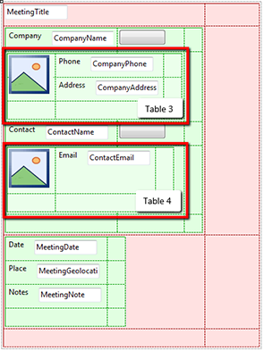

It is recommended to read this document before proceding: Invisible Mode property. This article is a quick tutorial of how to use the Invisible Mode Property in an application. The example is going to be based on the LightCRM (X Evolution 2). BeforeThe LightCRM app has a Meeting tab were you can find the information of a meeting. A meeting is composed by a Company, a Contact and the meeting info such as date, location and more.  Note that the blue buttons on the right side of the Company and Contact will take you to a secondary screen to show more info about each element. These are the secondary screens.   We want to change this behavior in such way that you dont have to go to the secondary screen to see more info about the meeting. AfterThe new meeting screen:  When tapping on the Plus button more info about each fields appear, this button tranforms to a Minus button that will also hide this information:    StepsStep 1We have to add two rows to our layout. These rows are going to have the hidden information. Also add two buttons which are going to trigger the actions to show and hide the extra information displayed on the screen.  Considerations:
Table 3 and Table 4 should both have:
Step 2Code the Events that are going to trigger the action to show and hide the extra information. As mentioned on the Step 1, in our example we created two button Classes which have a Minus and Plus images as background images, this was done just for UI purposes, is not going to change the way this tutorial works. We are going to see the event for Company button which executes 'Comp' Event., but is the same for Contact button which executes the 'Cont' Event.
Event 'Comp'
Composite
if &varBoolCompany
Table4.Visible = false
&varBoolCompany = false
Comp.Class = "Button.Plus"
else
Table4.Visible = true
&varBoolCompany = true
Comp.Class = "Button.Minus"
endif
EndComposite
Endevent
&varBoolCompany -> is a boolean flag we use to know in which state is the screen. Comp.Class = "Button.Plus" -> here we changed the class of the button but it can change the caption or anything to let the user know that the action contrary to the before state of the button. Having this done you can test your application. SampleYou can see this example working on the LightCRM (X Evolution 2) sample.
|
| Backlinks |
| Invisible Mode property |